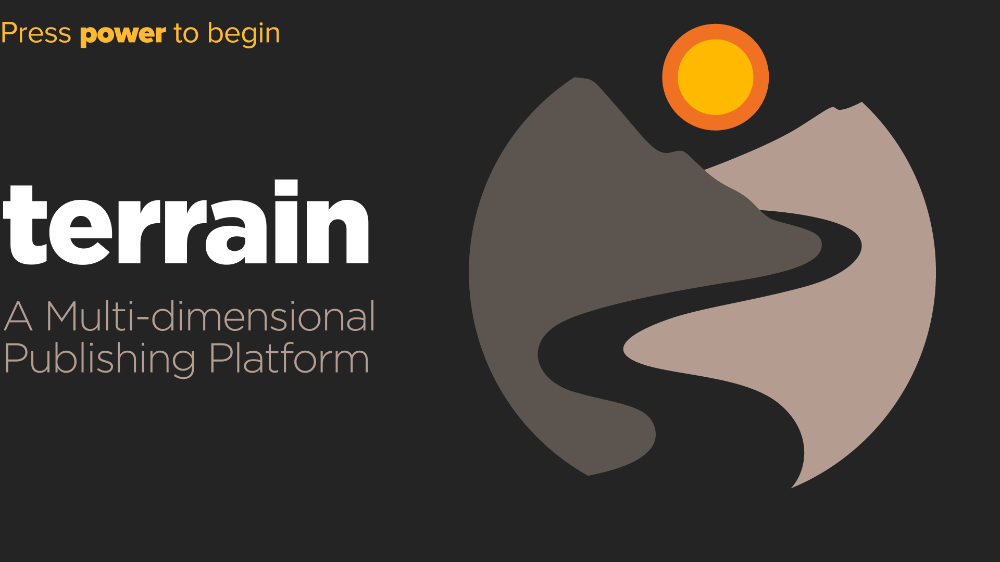

FURTHER
ELEMENT
Start

1/1
Navigator Index
Session History
0 nodes
Index
0 nodes
Sort By
Title (A-Z)
Node Number
Date Added
Visit Count
Filter by Tag
All Tags
Search
Export Index
Tap to resume audio
1
2
3
4
5
6
7
8
9
0
✱
@
•
RTN
GO
Restart
Pause
Forward 10 seconds
Support this project